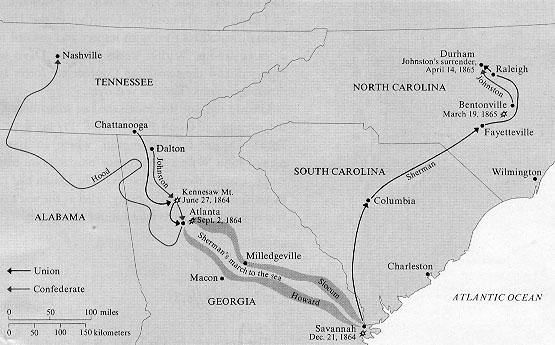
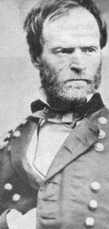
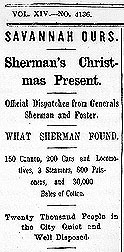

 |
 |
|
 |
For behind they left a wailing,
A terror and a ban,
And blazing cinders sailing,
And houseless households wan,
Wide zones of countries paling
And towns where maniacs ran.
Was it Treason's retribution-
Necessity's the plea?
They will long remember Sherman
And his streaming columns free-
They will long remember Sherman
Marching to the sea.